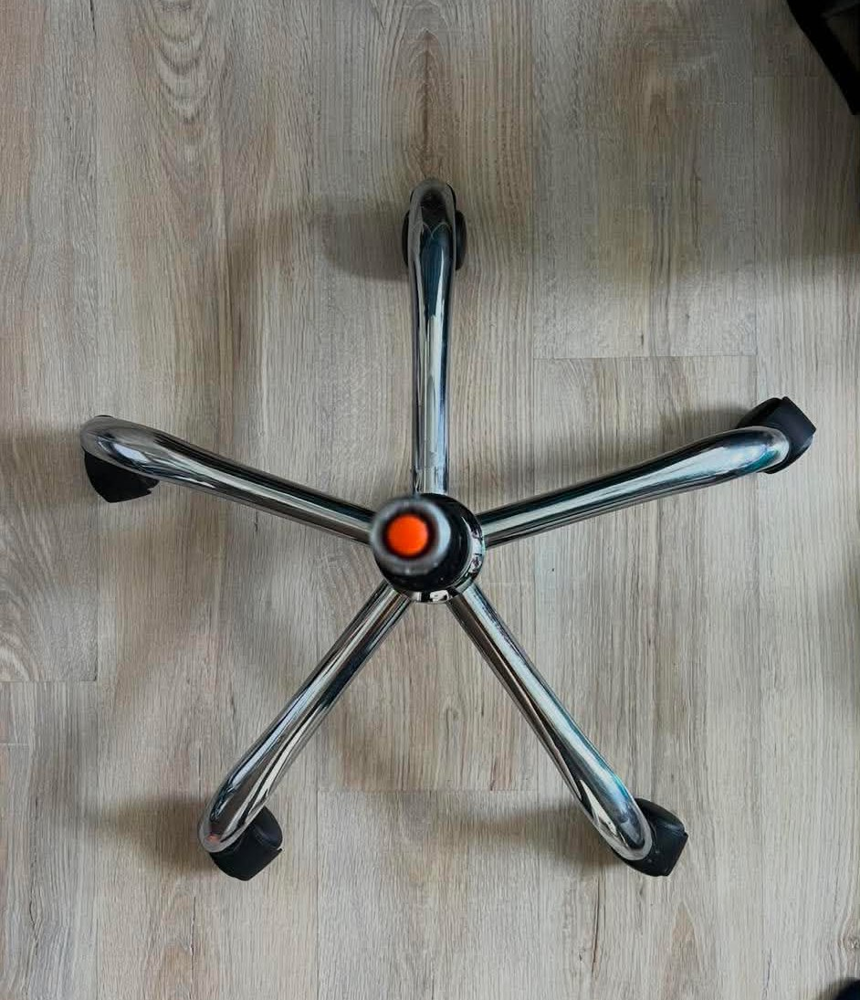
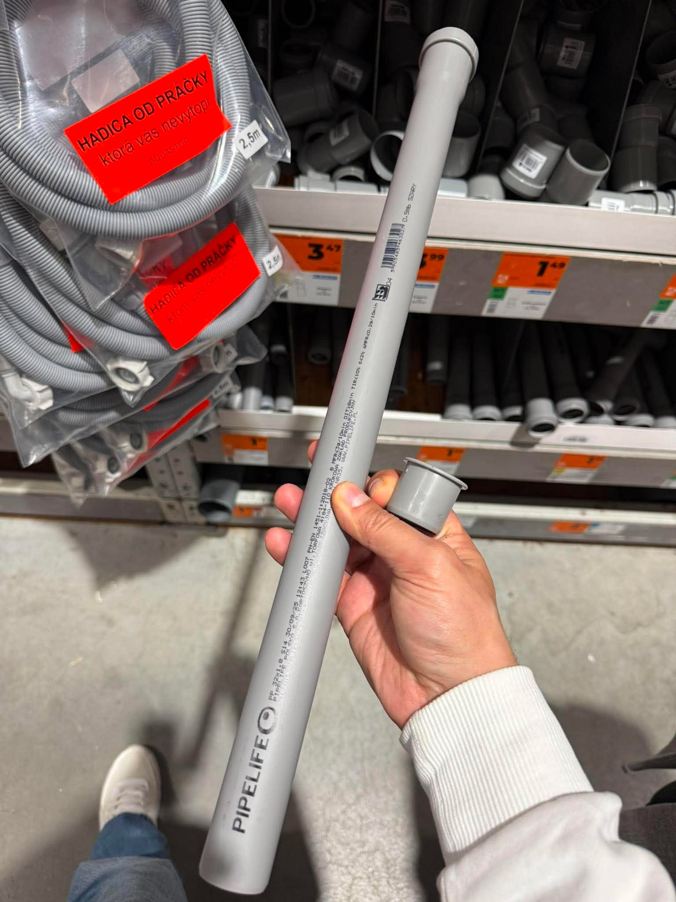
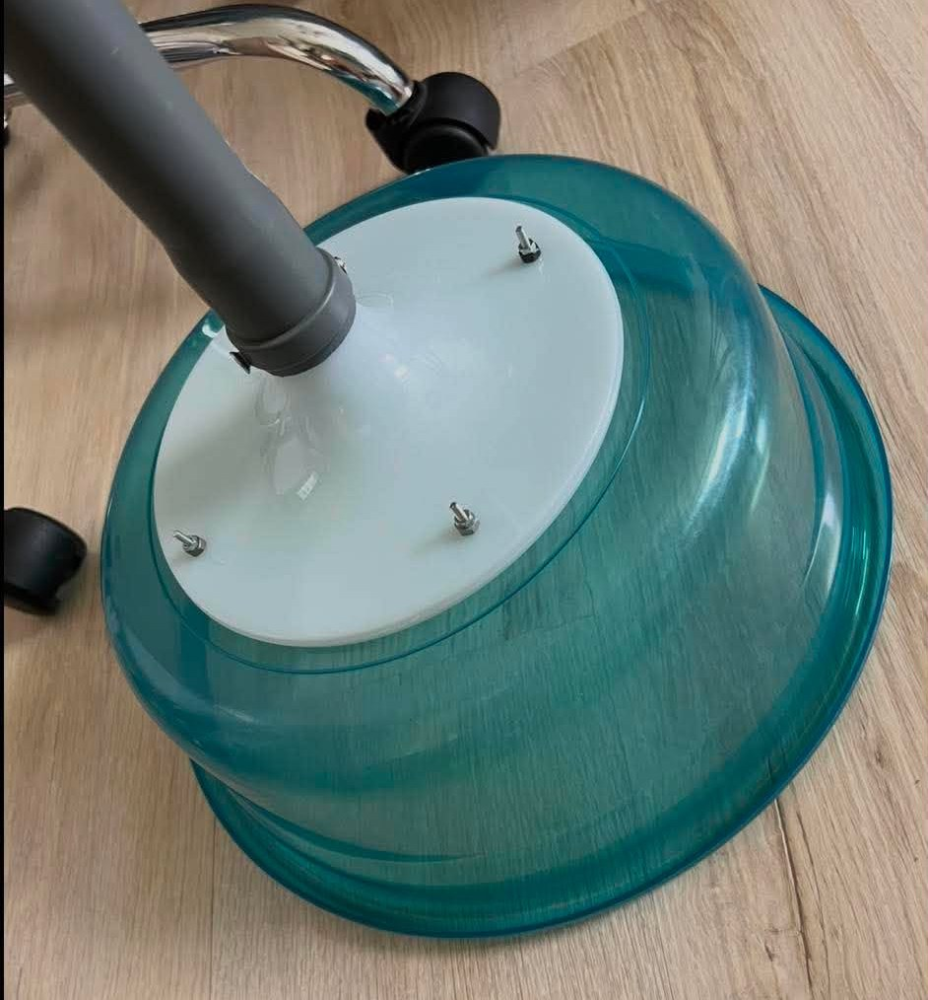

About four years ago, I started playing table tennis. Like many beginners, my progress was slow at first, but my enthusiasm for the sport was huge.
From one ball to proper practice
At the beginning we trained with a single ball. The room had a hard floor, so every missed shot meant chasing the ball across the space. It interrupted the flow of practice almost immediately.
Later we bought a box of JOOLA Flash balls, which are commonly used in league and tournament play in our country. As our skills improved, we naturally moved to multiball practice. We also learned that mixed second-hand balls were not a good solution: different brands felt different in bounce, hardness and consistency.
When we bought a Pongbot Nova S Pro robot, we needed hundreds of balls. A large batch from one manufacturer made the sessions far more consistent. Eventually our club invested together in a supply of professional JOOLA Flash balls for robot work and regular training.
The idea for a DIY ball stand
Robot sessions made one problem obvious: constantly bending down for balls, or working from a cardboard box, was not practical. I started looking at discarded office chairs. In many cases, the wheels and metal base are still perfectly usable.

After a little research, I found that office chairs commonly use a gas-lift cylinder with a standard diameter. That meant I only needed a plastic or metal tube that could slide over it.

How it came together
I ordered two inexpensive plastic basins, each able to hold roughly 100 table tennis balls. The last challenge was fixing the basin to the tube. An old broken IKEA lamp supplied the ideal metal mounting bracket.

The result is a sturdy ball stand built almost entirely from recycled parts. One basin stays on the stand; a second one is kept full inside a cabinet. Before training, we simply put the full basin on the stand and start playing.
From equipment to experience
As our sessions became more structured, our level improved too. Our rackets evolved from basic equipment to professional blades and rubbers. Like many players, we bought countless combinations, tested them and sold them again—often at a loss.
Looking back, I wish a tool like Racket Comparator had existed when I started. Instead of buying on marketing claims or forum opinions alone, players can compare their current setup with the one they are considering. The comparison can show how different blades, rubbers and thicknesses may change the feel of play before money is spent.
Sometimes the best result is discovering that a planned upgrade is not really an upgrade at all. Racket Comparator is not only about comparing equipment; it is about making more informed decisions, avoiding unnecessary purchases and spending more time improving at the table.
COMPARE BEFORE YOU BUY